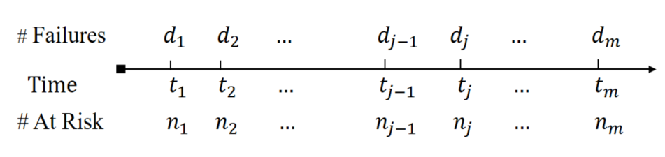
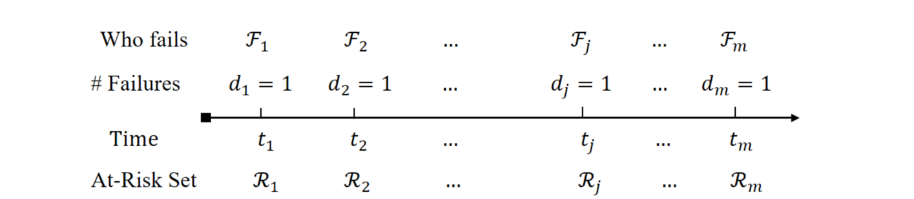
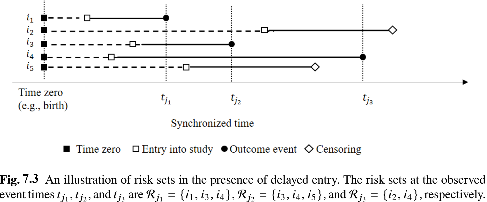
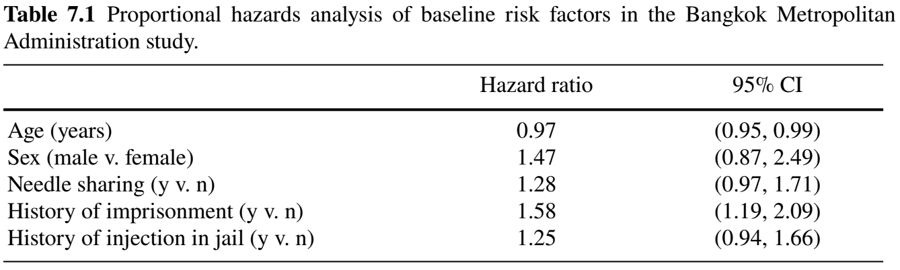
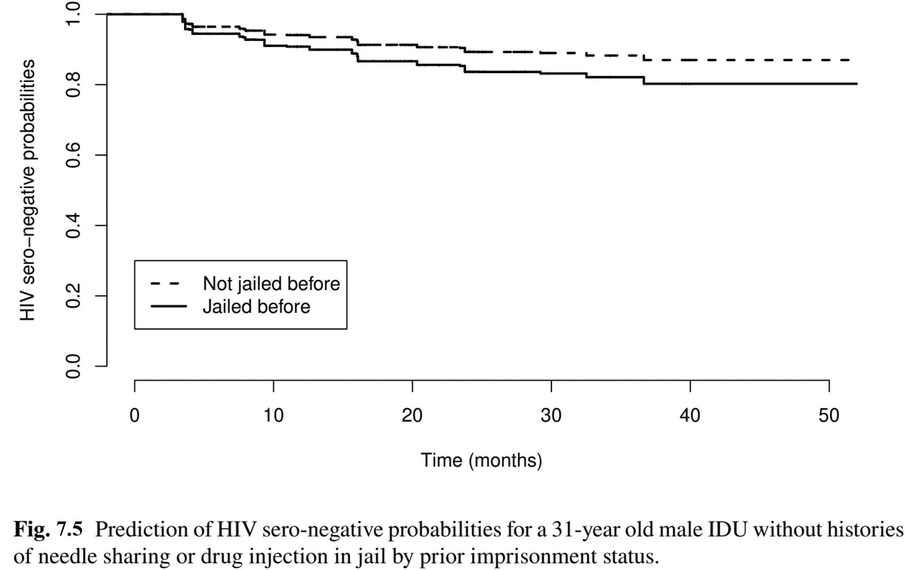

Chapter 7 - Left Truncation and Interval Censoring
Department of Biostatistics & Medical Informatics
University of Wisconsin-Madison
Left truncation mechanisms
Standard and general methods for left truncation
Non- and Semi-parametric methods for Interval censoring
Bangkok Metropolitan Administration HIV Study
\[\newcommand{\d}{{\rm d}}\] \[\newcommand{\T}{{\rm T}}\] \[\newcommand{\dd}{{\rm d}}\] \[\newcommand{\pr}{{\rm pr}}\] \[\newcommand{\var}{{\rm var}}\] \[\newcommand{\se}{{\rm se}}\] \[\newcommand{\indep}{\perp \!\!\! \perp}\] \[\newcommand{\Pn}{n^{-1}\sum_{i=1}^n}\]
Target of inference: still \(T\)
Observed data \[ (T_{Li}, X_i, \delta_i) \,\,\, (i=1,\ldots, n) \]
Independent truncation \[T_L\indep T\]



survival::Surv()Input
entry: \(T_{L}\); end: \(X\); status: \(\delta\)Output: survfit or coxph object
log-rank test: score test under coxph()
gender=1) and females (gender=2)Entry.Age)
obj <- coxph(Surv(Entry.Age, End.Age, status) ~ factor(gender),
data = channing)
summary(obj)
# coef exp(coef) se(coef) z Pr(>|z|)
# factor(gender)2 -0.3163 0.7289 0.1731 -1.827 0.0677 .
# ---
#
# exp(coef) exp(-coef) lower .95 upper .95
# factor(gender)2 0.7289 1.372 0.5191 1.023
#
# Concordance= 0.528 (se = 0.018)
# Likelihood ratio test= 3.17 on 1 df, p=0.07
# Wald test = 3.34 on 1 df, p=0.07
# Score (logrank) test = 3.36 on 1 df, p=0.07IntCens::ICSurvICM()delta = 1: left censoring (\(L_i=0\)) \(\to\) U = \(R_i\), V = NAgamma = 1: interval censoring (\(L_i>0, R_i<\infty\)) \(\to\) U = \(L_i\), V = \(R_i\)delta = gamma = 0: right censoring (\(R_i =\infty\)) \(\to\) U = NA, V = \(L_i\)model = c("NP", "PH", "PO"): nonparametric (one-sample) estimation, PH, PO regression models (with covariate matrix Z), respectivelyobj$beta (\(\hat\beta\)), obj$var(\(\hat\var(\hat\beta)\)), …1: male; 0: female)1: yes; 0: no)1: yes; 0: no)1: yes; 0: no)# print out regression results
print.ICSurv(obj.PH)
# NPMLE of proportional hazards for interval-censored data:
#
# ICM algorithm converges in 102 iterations.
#
# Maximum Likelihood Estimates for Regression parameters:
# Estimate StdErr z.value p.value
# age -0.029914 0.011051 -2.7068 0.006793 **
# sex 0.387923 0.268032 1.4473 0.147814
# need 0.249568 0.144987 1.7213 0.085195 .
# jail 0.456849 0.143961 3.1734 0.001506 **
# inject 0.221270 0.146767 1.5076 0.131652
# ---
# Signif. codes: 0 ‘***’ 0.001 ‘**’ 0.01 ‘*’ 0.05 ‘.’ 0.1 ‘ ’ 1

survival::Surv(entry, end, status)IntCens::ICSurvICM()
IntCens package is in “Files > R-package”)